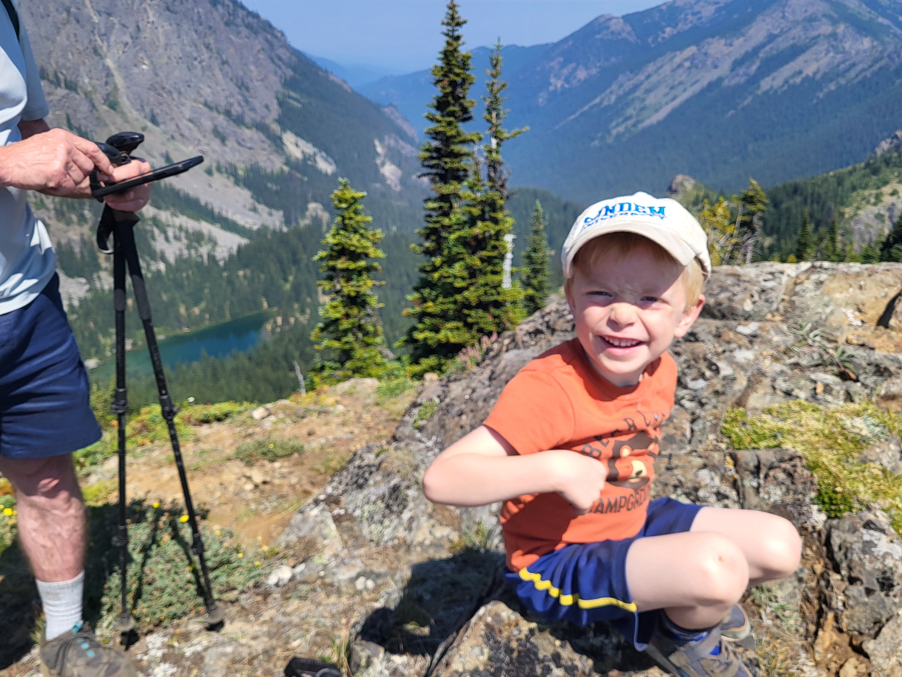

The Naive and the Miraculous
August 16, 2026
Treatment continues apace as Micaiah's body is handling the infusions well. He had very little nausea for the few days after chemo, and his blood counts have been recovering well so far. Before getting his round 3 infusions, they did labs to test the health of his various organs, and everything came back clear. He started to get grumpy during his first infusion as we passed by his normal naptime, but removing shoes and offering cuddles sent him straight to sleep.

Mr. Sandman strikes again
He did de-access his port at home again, but it was less dramatic this time. We checked in with the on-call nurse, and everything was okay. In the future, we likely won't come home with him accessed. I almost wonder if he's too hyperactive and energetic to leave the port access alone. The first time he came home accessed, he was recovering from painful surgery and biopsies. His body was exhausted. These last two times, he's had energy and a normal level of curiosity.
We commented to each other recently that his energy levels have been so high it almost seems like the drugs have jazzed him up such that now he is best typified as a ping-pong ball. Instead of being grumpy and lethargic, he's happy and energetic (even if sometimes still grumpy). Micaiah's temperament has helped set the standard for the emotional weight this process has laid on our family. His apparent normalcy and specifically his physical resilience almost makes the house feel like everything is normal.
Elias is also handling everything well. He continues to develop as a strong leader and shows true compassion for his brother. Two weeks ago now, I took Elias on his first backpacking trip. He was an absolute unit on the trail. There was the typical complaining you might expect from a three-year-old on a 4-mile hike with 1,700 feet in elevation gain, but he made it to the destination, and we had a wonderful time fishing. At one point, there were a few bushes between us as we fished the lake. I heard him talking, and I started to listen closer. All I could make out was, "...and please heal Micaiah's eyes tomorrow and help us catch lots of fish. Amen." I took a moment to smile at the simple naivety of his prayer, but I was interrupted at the thought that perhaps my prayers haven't been naive enough. Why would I not pray audaciously to the One who loves to shower us with goodness?

Elias from the top of Silver Mountain in the Olympics
Our group only caught a couple fish while we were there. I guess God has been so focused on the former request to heal Micaiah (you know, with Elias' tomorrow deadline and all) that the latter request for fish became an afterthought. Please continue to pray for Micaiah and our family. We won't get any further updates on tumor status until round 4, so prayers that God would heal him tomorrow might not be strictly necessary, but do join us in praying for a result that is so astounding that it could only be interpreted as a miracle.
Strangely, the doctor's assessment a few weeks ago that "It would be pretty miraculous if we didn't have to remove the left eye" gave us an unexpected shot of hope. I know it wasn't intended that way. Still, I imagine it was the numerous miracles we've seen so far that made his statement seem like a divine setup. I am no prophet, so I make no claims regarding God's plan for Micaiah's eyes, but I am working to recover a sense of childlike faith. If God heals Micaiah and miraculously saves his left eye, it will have happened at a particular point. Why not tomorrow?